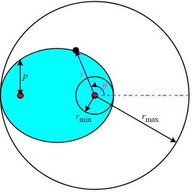
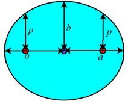
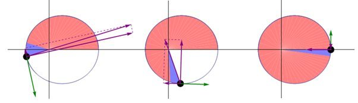
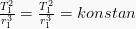

Kepler Laws
First law of Kepler
"The orbit of every planet is an ellipse with the Sun at one of the two foci."
 
Mathematically, an ellipse can be represented by the formula:
where 'p' is the semi-latus rectum, ε is the eccentricity of the ellipse, r is the distance from the Sun to the planet, and θ is the angle to the planet's current position from its
closest approach, as seen from the Sun. So (r, θ) are polar coordinates.
For an ellipse '0 < ε < 1' in the limiting case ε = 0, the orbit is a circle with the Sun at the centre (i.e. where there is zero eccentricity).
At θ = 0°, perihelion, the distance is minimum
At θ = 90° and at θ = 270° the distance is equal to 'p'.
At θ = 180°, aphelion, the distance is maximum (by definition, aphelion is – invariably – perihelion plus 180°)
The eccentricity ε is the coefficient of variation between rmin and rmax:
The area of the ellipse is
The special case of a circle is ε = 0, resulting in r = p = rmin = rmax = a = b and A = πr2.
Second law of Kepler
"A line joining a planet and the Sun sweeps out equal areas during equal intervals of time."

The same (blue) area is swept out in a fixed time period. The green arrow is velocity. The purple arrow directed towards the Sun is the acceleration.
The other two purple arrows are acceleration components parallel and perpendicular to the velocity.
The orbital radius and angular velocity of the planet in the elliptical orbit will vary. This is shown in the animation: the planet travels faster when closer to the Sun, then
slower when farther from the Sun. Kepler's second law states that the blue sector has constant area.
The area enclosed by the elliptical orbit is , So the period  satisfies
and the mean motion of the planet around the Sun
satisfies
satisfies
and the mean motion of the planet around the Sun
satisfies
Third law of Kepler
"The square of the orbital period of a planet is directly proportional to the cube of the semi-major axis of its orbit."

This captures the relationship between the distance of planets from the Sun, and their orbital periods.
Kepler enunciated in 1619 this third law in a laborious attempt to determine what he viewed as the "music of the spheres" according to precise laws, and express it in terms of musical notation.
So it was known as the harmonic law.
Using Newton's Law of gravitation (published 1687), this relation can be found in the case of a circular orbit by setting the centripetal force equal to the gravitational force:
Then, expressing the angular velocity in terms of the orbital period and then rearranging, we find Kepler's Third Law:
A more detailed derivation can be done with general elliptical orbits, instead of circles, as well as orbiting the center of mass, instead of just the large mass.
This results in replacing a circular radius, 'r', with the semi-major axis, 'a', of the elliptical relative motion of one mass relative to the other, as well as replacing the large mass 'M' with 'M+m'.
However, with planet masses being so much smaller than the Sun, this correction is often ignored. The full corresponding formula is:
where 'M' is the mass of the Sun, 'm' is the mass of the planet, and 'G' is the gravitational constant, 'T' is the orbital period and 'a' is the elliptical semi-major axis.